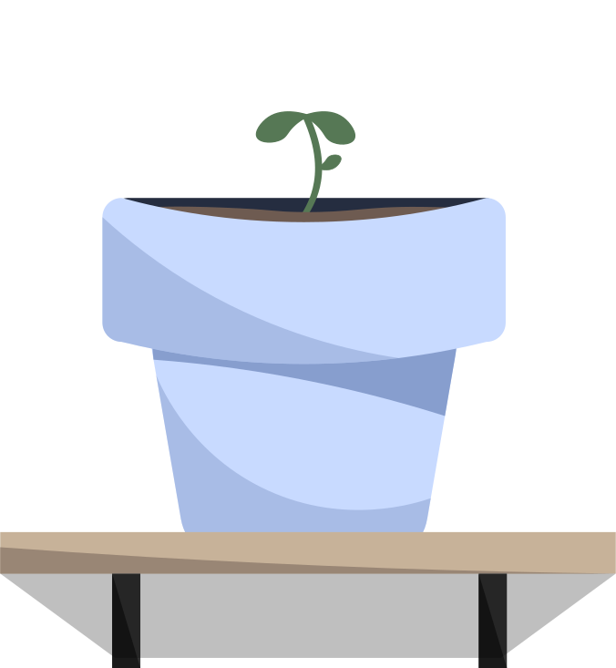

Grundlæggende UX/UI
Hvad jeg har lært under temaet
I tema 03, har jeg lært de grundlæggende ting inden for User Experience og User Interface med fokus på brugeren. Jeg har arbejdet med research og tests for bedre at forstå brugernes behov og brugt Figma til at lave wireframes og prototyper. Jeg har lært, hvordan man udvikler og forbedrer et design gennem feedback og test.
Jeg har oplevet hvor vigtigt det er at være omhyggelig og udnytte idéfasen, for såvidt muligt at undvige forhindringer i udførelsesfasen. Opgaver i dette tema har lært mig hvordan man laver løsninger som er nemme at bruge, og skabe en god brugeroplevelse.
Min arbejdsproces
I tema 03 arbejdede jeg med at udvikle min egen hjemmeside ud fra et valgfrit emne. Jeg startede processen med at lave en brainstorm, hvor jeg samlede forskellige idéer, indtil jeg fandt det emne jeg havde interesse for og gerne ville arbejde videre med.
Jeg har brugt Figma gennem hele forløbet til at udvikle mit design. Her har jeg lavet et moodboard for at finde den rette stemning og visuelle stil samt en styletile med farver, typografi og grafiske valg. Jeg har også udarbejdet wireframes for at få overblik over sidens opbygning og indhold. Efterfølgende lavede jeg en LoFi prototype med fokus på struktur og funktionalitet og til sidst en klikbar HiFi prototype, som viser det endelige design og giver et billede af hvordan hjemmesiden skal fungere for brugeren.
Mit site blev kodet ud fra dette forarbejde og de selvudviklede wireframes jeg havde lavet, hvor jeg indsatte det indhold jeg havde udarbejdet.
Prøv den klikbare prototype i min figma-fil


Det endelige resultat
I min løsning har jeg haft meget fokus på hvilken følelse hjemmesiden skulle skabe hos brugeren. Den ønskede følelse har jeg arbejdet med i både farvevalg og det logo jeg lavede til siden.
Find min løsning her: Savile Shopping
Jeg endte med at overvurdere den tid jeg havde til at udføre min idé, men nåede heldigvis i mål. Undervejs fik jeg lært hvor vigtigt det er at lægge en plan, så jeg ikke ender med at arbejde til langt ud på natten.